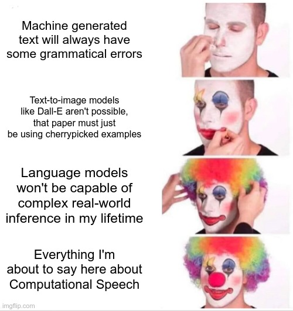
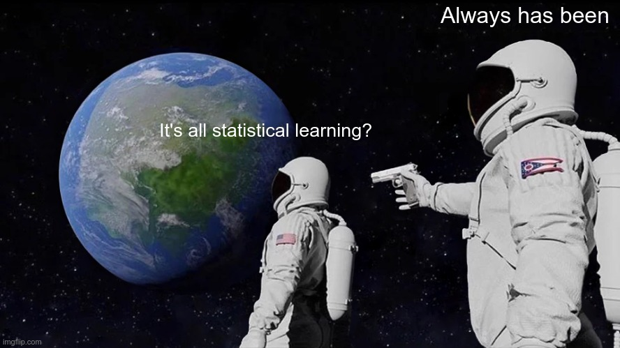
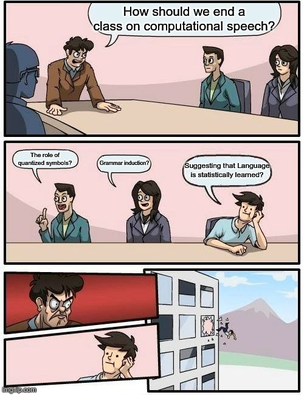

What’s (probably) next for computational speech processing
What have we learned?
What does this all teach us about language?
We barely know what the computational speech processing world will look like in 2025
Look back later in your career and laugh at how many things I got wrong
… but my track record isn’t amazing

Unless something better emerges, for wealthy languages, DNNs have won
There’s not serious competition in ASR, TTS, Denoising, and otherwise
Improvements to LLMs will likely mean even stronger performance
Unless we can improve on the compute/memory constraints, these will not be affordable to run at home
Remote models are closed by design, and privacy policies cannot be reasonably confirmed or trusted
Paywalls and data harvesting will continue to be the norm
As a result…
Open codecs are often preferable and quickly adopted
Compression tools tend to be open, as they should be
Praat is free and open, as are most Python libraries
Linux is the only serious operating system for deploying ‘AI’ models
My bad, rant slipped out.
Back to more concrete predictions…
Even as building the models is increasingly statistical and Computer Science, studying them will remain linguistic
We’ll use the same tools we’ve always used to understand speech-using humans, to understand speech-using computers
We’ll learn how these models work by treating them like we already treat black-box language users
Whisper’s end-to-end, intergrated-LM model is unlikely to be an anomaly
Powerful ability to predict the next word is… uh… useful for ASR
This will help with many of the remaining world inference issues
Current speaker adaptation approaches struggle with (e.g.) phone substitutions or major prosodic differences
Embeddings based on (and affecting) models which include text analysis, prosody, and more will allow more robust dialect differences to be mapped
This technology may be useful for sociolinguistic inquiry, broadly
(To the extent that we as a species do)
Future methods will probably be conceptually similar to current neural approaches
Differences in architecture and process will vary, but statistical learning is statistical learning!
Which brings us to an important question!
How do computers turn speech into numbers (and back)?
How do computers modify speech?
How do computers turn speech into text?
How do computers turn text into speech?
How do sound waves become binary strings?
How do we extract meaningful features (e.g. pitch, formants)?
How do we turn speech into a matrix of useful numbers?
How do we turn speech into a compressed and more efficient representation?
How do we filter a speaker’s voice out of noise?
How do we transmit a voice with encryption/efficiency?
How do we change the characteristics of a voice (autotune/resynthesis)
Automatic Speech Recognition (ASR)
Legacy ASR Methods
Wake Word Detection and other methods for improving ASR in our lives
Determining the most probable string based on ambiguous words
Text-to-Speech (TTS, ‘Speech Synthesis’)
Legacy methods like Unit Selection
Modern Neural Models
Modifying the ‘voice’ of TTS models and copying others
How do we store sound on disk?
How do we collect speech data for building corpora?
How do cell phones send your voice over a bad connection?
How do deep neural networks work?
Where’s the right balance between ease of use and privacy?
What kind of data should be used to improve these models?
When is it acceptable to use these to replace humans?
What should a computer sound like, anyways?
Is it OK to make these systems sound like a particular person?
WAV FFT DCT LPC MFCC MP3 OPUS LID i-vector DNN CNN ASR TTS Wav2Vec2
Not to mention the 500,000 various neural architectures we had to breeze by
I damned near apologize for the amount you all had to learn to do this right
You understand why the Nyquist Theorem is a roadmap to a happy life
You know how your phone stores or streams that Daft Punk song, how it gets played back, and how it was created
You understand what’s happening when your phone turns your words into text, badly
You understand why your phone might say /lɪgən/ for LIGN 168, but /əlajn/ for ‘align’
… and you know how to steal your professor’s voice for identity theft reasons
Not ECE or CS or DSC 168
So, why do linguists care about this?
Solving problems people have with computers with computers
Often, electrical engineers and data scientists and ‘AI’ people are leading the charge
For many, it’s about language, not Language
You can do a lot of computational speech processing without really understanding speech
How machines understand speech tells us how humans might understand speech
TTS systems tell us about what’s fixed and varying, and how we train them tells us what ‘matters’ for perception
Computational measurement of speech has been instrumental (🤣) in advancing the field of phonetics
… but the most important concept of all is…
Our existing algorithms for processing sound are unreasonably effective at working on and improving speech signals
Current models are really good at understanding speech for people well-represented in the training data
Current models are really good at reproducing speech for dialects well-represented in the training data
We have really good engineering solutions to most computational speech problems (for wealthy languages and users)
Compression just finds sources and filters, and that’s not only an issue of speech
ASR can just be associating patterns in waves with patterns of letters and sounds
TTS can be done by creating images of spectrograms based on strings of letters
The thing that makes speakers different can be ‘learned’ by statistics in an embedding space


We are better at this than machines, still, so maybe there’s more to it than statistics
Perhaps we treat speech as more special than machines do, and that makes us able to learn faster and more robustly
Maybe we’re doing more symbolic reasoning, a weakness of current DNNs
Maybe we just know more about the world, so we don’t make certain classes of errors
Human speech doesn’t need specific algorithms which include innate linguistic knowledge to be produced and perceived
Human speech doesn’t need reference to phonemes or phonological rules to be produced and perceived
Human speech doesn’t need to be treated any differently than any other waveform to be linked to linguistic representations
The same models which do vision, sequence understanding, and ‘AI’, can be applied to solve speech tasks
Speech processing doesn’t even need to be done by humans to be effective
Yet…
The signal is wildly complicated, needing incredible nuance to capture and measure it well
We are able to understand speech even when wildly distorted, modified, and resynthesized
Capturing ‘basic’ characteristics like speaker identity, emotion, and dialect requires vast complexity
Only after 70 years of speech research are computers able to approximate human perception and production of speech